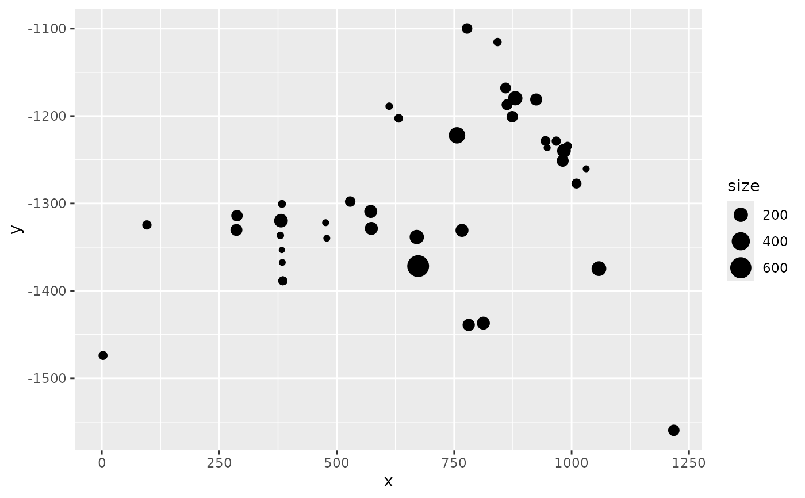

Extracts start and end points of the lines and calls geom_segment to plot
lines between them. Requires the ggplot2 package.
Usage
# S3 method for SpatialLines
gg(data, mapping = NULL, crs = NULL, ...)Arguments
- data
A
SpatialLinesorSpatialLinesDataFrameobject.- mapping
Aesthetic mappings created by
ggplot2::aesorggplot2::aes_used to update the default mapping. The default mapping isggplot2::aes(x = .data[[coordnames(data)[1]]], y = .data[[coordnames(data)[2]]], xend = .data[[paste0("end.", coordnames(data)[1])]], yend = .data[[paste0("end.", coordnames(data)[2])]]).- crs
A
CRSobject defining the coordinate system to project the data to before plotting.- ...
Arguments passed on to
ggplot2::geom_segment.
See also
Other geomes for spatial data:
gg.SpatRaster(),
gg.SpatialGridDataFrame(),
gg.SpatialPixelsDataFrame(),
gg.SpatialPixels(),
gg.SpatialPoints(),
gg.SpatialPolygons(),
gg(),
gm()
Examples
# \donttest{
if (require(ggplot2, quietly = TRUE) &&
require(ggpolypath, quietly = TRUE) &&
bru_safe_sp()) {
# Load Gorilla data
data("gorillas", package = "inlabru")
# Plot Gorilla elevation covariate provided as SpatialPixelsDataFrame.
# The same syntax applies to SpatialGridDataFrame objects.
ggplot() +
gg(gorillas$gcov$elevation)
# Add Gorilla survey boundary and nest sightings
ggplot() +
gg(gorillas$gcov$elevation) +
gg(gorillas$boundary) +
gg(gorillas$nests)
# Load pantropical dolphin data
data("mexdolphin", package = "inlabru")
# Plot the pantropiical survey boundary, ship transects and dolphin sightings
ggplot() +
gg(mexdolphin$ppoly) + # survey boundary as SpatialPolygon
gg(mexdolphin$samplers) + # ship transects as SpatialLines
gg(mexdolphin$points) # dolphin sightings as SpatialPoints
# Change color
ggplot() +
gg(mexdolphin$ppoly, color = "green") + # survey boundary as SpatialPolygon
gg(mexdolphin$samplers, color = "red") + # ship transects as SpatialLines
gg(mexdolphin$points, color = "blue") # dolphin sightings as SpatialPoints
# Visualize data annotations: line width by segment number
names(mexdolphin$samplers) # 'seg' holds the segment number
ggplot() +
gg(mexdolphin$samplers, aes(color = seg))
# Visualize data annotations: point size by dolphin group size
names(mexdolphin$points) # 'size' holds the group size
ggplot() +
gg(mexdolphin$points, aes(size = size))
}
#> Regions defined for each Polygons
#> Regions defined for each Polygons
#> Regions defined for each Polygons

# }